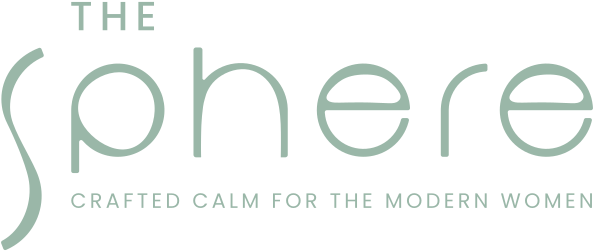
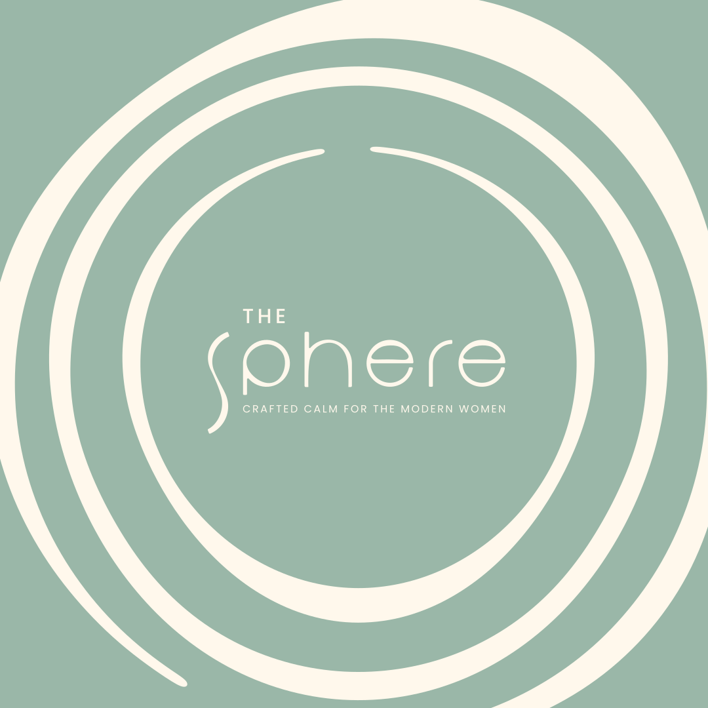

Move
Movement that brings you back to your body.

Request an invitationA WOMEN’S WELLNESS CLUB IN COIMBATORE
Crafted calm for the modern woman.
A private space for women who do a lot, carry a lot, and deserve a space that asks nothing of them.
COME AS YOU ARE.
LEAVE A LITTLE MORE YOURSELF.
Pause.
You’re here.
THE SPHERE
Here, wellness isn't another task on your list.
It is time to pause.
To breathe.
To move.
To learn.
To connect.
To simply be.
01 / A SPACE THAT FEELS LIKE YOURS
We believe wellness is more than a workout, a treatment or a moment of escape.
It is how you feel when you leave a room. The people you meet. The conversations you have. The rituals you return to. And the space you create for yourself amidst everything else.
The Sphere brings these moments together through carefully curated experiences designed exclusively for women.
From movement and mindful practices to intimate conversations, immersive experiences and moments of stillness — every gathering is designed with intention.
WHY THE SPHERE?
Because a woman needs a space that is just for her.
You may be building something extraordinary.
The Sphere exists to create a little more room for that woman. A place where you don't have to perform, achieve or keep up. You simply arrive.
02 / THE SPHERE EXPERIENCE
The Sphere is intentionally intimate.
We believe meaningful experiences happen when there is room to connect — with yourself and with others.
Every experience is thoughtfully curated around four elements:
Movement that brings you back to your body.
Practices that create stillness in a world that rarely stops.
Conversations and experiences that bring women together beyond small talk.
New ideas, practices, perspectives and experiences that enrich the way you live.
MORE THAN WELLNESS
At The Sphere, you might begin your morning with yoga, discover the grounding power of Kalaripayattu, experience the stillness of sound healing, or explore a completely new form of movement.
You might sit across from a woman you've never met and leave with a conversation you'll never forget.
Because sometimes wellness isn't about what you do. It's about what you feel.
CURATED EXPERIENCES
Our experiences are designed to create moments that stay with you.
Yoga, functional movement, traditional practices and mindful ways of reconnecting with the body.
Sound healing, meditation, breathwork and experiences designed to quiet the noise.
Honest, thoughtful conversations on womanhood, ambition, relationships, identity and the realities of modern life.
Immersive experiences that invite you to explore something new.
Intimate gatherings designed to build genuine relationships among like-minded women.
IS WELLNESS A LUXURY OR A NECESSITY?
We believe it is a necessity.
For a woman constantly giving her time, energy and attention to everyone around her, taking care of herself can often become the last item on the list.
The Sphere challenges that idea. We believe taking care of yourself isn't indulgence. It is part of living well.
And sometimes, choosing yourself begins with something as simple as showing up for an hour.
03 / THE WOMEN OF THE SPHERE
The Sphere brings together women from different worlds, professions and stages of life.
Founders. Leaders. Entrepreneurs. Creatives. Mothers. Professionals. Women building businesses, families, careers and lives they are proud of.
What brings them together isn't what they do. It's how they choose to live.

you belong in your life.
A PRIVATE CIRCLE
The Sphere is designed for women who value privacy, meaningful connection and thoughtfully curated experiences.
Membership is intentionally limited to preserve the intimacy of the community and the quality of every experience.
This isn't a space designed to have the most members. It's a space designed to have the right ones.
Your first step into The Sphere.
Venue details are shared by email or WhatsApp.
04 / THE SPHERE JOURNAL
A space for thoughts, conversations and ideas around modern womanhood.
A NOTE FROM THE SPHERE
There are so many spaces created for women to work harder, look better, achieve more and become more.
We wanted to create something different.
A space to pause.
A space to connect.
A space to simply be.
Where you can discover something new. Where you can take a breath without feeling guilty for it.
The Sphere was created for the woman behind all the roles she carries.
Come as you are. Stay for what you discover.
Welcome to The Sphere.